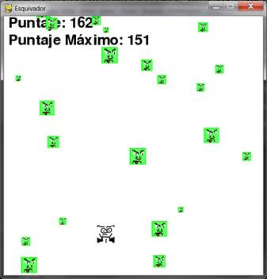

|
|
Capítulo 20 |
Evasor |

Temas Tratados En Este Capítulo:
· La bandera pygame.FULLSCREEN
· Variables constantes de Pygame para las teclas
· El método Rect.move_ip()
· La función pygame.mouse.set_pos()
· Implementando códigos de trucos
· Modificando el juego Evasor
En los últimos tres capítulos hemos repasado el módulo Pygame y demostrado cómo usar sus múltiples características. En este capítulo, usaremos ese conocimiento para crear un juego gráfico llamado Evasor.
En el juego Evasor el jugador controla a una pequeña persona (a quien llamamos el personaje del jugador) que debe evadir a un montón de villanos que caen desde el borde superior de la pantalla. Cuanto más tiempo consiga el jugador evadir a los villanos mejor puntaje obtendrá en el juego.
Sólo por diversión, hemos agregado también al juego algunos trucos. Si el jugador mantiene pulsada la tecla “x”, los villanos comienzan a moverse super lento. Si el jugador mantiene pulsada la tecla “z”, los villanos revertirán su trayectoria y se moverán hacia arriba en lugar de hacia abajo.
Revisión de los Tipos de Datos Básicos Pygame
Revisemos algunos de los tipos de datos básicos usados en Pygame:
· pygame.Rect - Los objetos Rect representan la ubicación y el tamaño de un espacio rectangular. La ubicación puede determinarse a partir de su atributo topleft (o los atributos topright, bottomleft y bottomright). Estos atributos esquina son una tupla de enteros corresopndientes a las coordenadas X e Y. El tamaño puede determinarse a partir de los atributos width y height, números enteros que indican cuántos píxeles de ancho y cuántos de alto tiene el área rectangular. Los objetos Rect tienen un método colliderect() para comprobar si colisionan con otro objeto Rect.
· pygame.Surface - Los objetos Surface son áreas de píxeles coloreados. Los objetos Surface representan una imagen rectangular, mientras que los objetos Rect sólo representan un espacio rectangular y su ubicación. Los objetos Surface tienen un método blit() que se usa para dibujar la imagen de un objeto Surface sobre otro objeto Surface. El objeto Surface devuelto por la función pygame.display.set_mode() es especial porque cualquier cosa que dibujemos sobre ese objeto Surface se muestra en la pantalla del usuario al llamar a pygame.display.update().
· pygame.event.Event - El módulo pygame.event genera objetos Event cada vez que el usuario provee entradas de teclado, ratón o cualquier otro tipo de entradas. La función pygame.event.get() devuelve una lista de estos objetos Event. Puedes ver a qué tipo de evento corresponde el objeto Event mirando su atributo type. QUIT, KEYDOWN y MOUSEBUTTONUP son algunos ejemplos de tipos de eventos.
· pygame.font.Font - El módulo pygame.font tiene el tipo de datos Font que representa la fuente (tipografía) del texto en Pygame. Los argumentos que recibe pygame.font.SysFont() son una cadena con el nombre de la fuente y un entero con el tamaño de letra. Sin embargo es común ingresar None como nombre de la fuente para utilizar la fuente por defecto del sistema.
· pygame.time.Clock - El objeto Clock del módulo pygame.time es útil para evitar que nuestros juegos se ejecuten a la máxima velocidad posible. El objeto Clock tiene un método tick(), al cual le pasamos a cuántos cuadros por segundo (FPS) queremos que se ejecute el juego. Cuanto más alto sea el valor FPS, más rápido se ejecutará el juego.
Código Fuente de Evasor
Escribe el siguiente código y guárdalo en un archivo llamado evasor.py. Este juego requiere además otros archivos de sonido e imagen que puedes descargar de la URL http://invpy.com/es/diff/dodger.
evasor.py
1. import pygame, random, sys
2. from pygame.locals import *
3.
4. ANCHOVENTANA = 600
5. ALTOVENTANA = 600
6. COLORVENTANA = (255, 255, 255)
7. COLORFONDO = (0, 0, 0)
8. FPS = 40
9. TAMAÑOMINVILLANO = 10
10. TAMAÑOMAXVILLANO = 40
11. VELOCIDADMINVILLANO = 1
12. VELOCIDADMAXVILLANO = 8
13. TASANUEVOVILLANO = 6
14. TASAMOVIMIENTOJUGADOR = 5
15.
16. def terminar():
17. pygame.quit()
18. sys.exit()
19.
20. def esperarTeclaJugador():
21. while True:
22. for evento in pygame.event.get():
23. if evento.type == QUIT:
24. terminar()
25. if evento.type == KEYDOWN:
26. if evento.key == K_ESCAPE: # Sale del juego al presionar ESCAPE
27. terminar()
28. return
29.
30. def jugadorGolpeaVillano(rectanguloJugador, villanos):
31. for v in villanos:
32. if rectanguloJugador.colliderect(v['rect']):
33. return True
34. return False
35.
36. def dibujarTexto(texto, fuente, superficie, x, y):
37. objetotexto = fuente.render(texto, 1, COLORVENTANA)
38. rectangulotexto = objetotexto .get_rect()
39. rectangulotexto.topleft = (x, y)
40. superficie.blit(objetotexto, rectangulotexto)
41.
42. # establece un pygame, la ventana y el cursor del ratón
43. pygame.init()
44. relojPrincipal = pygame.time.Clock()
45. superficieVentana = pygame.display.set_mode((ANCHOVENTANA, ALTOVENTANA))
46. pygame.display.set_caption('Evasor')
47. pygame.mouse.set_visible(False)
48.
49. # establece las fuentes
50. fuente = pygame.font.SysFont(None, 48)
51.
52. # establece los sonidos
53. sonidoJuegoTerminado = pygame.mixer.Sound('juegoterminado.wav')
54. pygame.mixer.music.load('musicaDeFondo.mid')
55.
56. # establece las imagenes
57. imagenJugador = pygame.image.load('jugador.png')
58. rectanguloJugador = imagenJugador.get_rect()
59. imagenVillano = pygame.image.load('villano.png')
60.
61. # Muestra la pantalla inicial
62. dibujarTexto('Evasor', fuente, superficieVentana, (ANCHOVENTANA / 3)+40, (ALTOVENTANA / 3))
63. dibujarTexto('Presione una tecla para comenzar.', fuente, superficieVentana, (ANCHOVENTANA / 3) - 180, (ALTOVENTANA / 3) + 50)
64. pygame.display.update()
65. esperarTeclaJugador()
66.
67.
68. puntajeMax = 0
69. while True:
70. # establece el comienzo del juego
71. villanos = []
72. puntaje = 0
73. rectanguloJugador.topleft = (ANCHOVENTANA / 2, ALTOVENTANA - 50)
74. moverIzquierda = moverDerecha = moverArriba = moverAbajo = False
75. trucoReversa = trucoLento = False
76. contadorAgregarVillano = 0
77. pygame.mixer.music.play(-1, 0.0)
78.
79. while True: # el ciclo del juego se mantiene mientras se este jugando
80. puntaje += 1 # incrementa el puntaje
81.
82. for evento in pygame.event.get():
83. if evento.type == QUIT:
84. terminar()
85.
86. if evento.type == KEYDOWN:
87. if evento.key == ord('z'):
88. trucoReversa = True
89. if evento.key == ord('x'):
90. trucoLento = True
91. if evento.key == K_LEFT or evento.key == ord('a'):
92. moverDerecha = False
93. moverIzquierda = True
94. if evento.key == K_RIGHT or evento.key == ord('d'):
95. moverIzquierda = False
96. moverDerecha = True
97. if evento.key == K_UP or evento.key == ord('w'):
98. moverAbajo = False
99. moverArriba = True
100. if evento.key == K_DOWN or evento.key == ord('s'):
101. moverArriba = False
102. moverAbajo = True
103.
104. if evento.type == KEYUP:
105. if evento.key == ord('z'):
106. trucoReversa = False
107. puntaje = 0
108. if evento.key == ord('x'):
109. trucoLento = False
110. puntaje = 0
111. if evento.key == K_ESCAPE:
112. terminar()
113.
114. if evento.key == K_LEFT or evento.key == ord('a'):
115. moverIzquierda = False
116. if evento.key == K_RIGHT or evento.key == ord('d'):
117. moverDerecha = False
118. if evento.key == K_UP or evento.key == ord('w'):
119. moverArriba = False
120. if evento.key == K_DOWN or evento.key == ord('s'):
121. moverAbajo = False
122.
123. if evento.type == MOUSEMOTION:
124. # Si se mueve el ratón, este se mueve al lugar donde esté el cursor.
125. rectanguloJugador.move_ip(evento.pos[0] - rectanguloJugador.centerx, evento.pos[1] - rectanguloJugador.centery)
126.
127. # Añade villanos en la parte superior de la pantalla, de ser necesarios.
128. if not trucoReversa and not trucoLento:
129. contadorAgregarVillano += 1
130. if contadorAgregarVillano == TASANUEVOVILLANO:
131. contadorAgregarVillano = 0
132. tamañoVillano = random.randint(TAMAÑOMINVILLANO, TAMAÑOMAXVILLANO)
133. nuevoVillano = {'rect': pygame.Rect(random.randint(0, ANCHOVENTANA-tamañoVillano), 0 - tamañoVillano, tamañoVillano, tamañoVillano),
134. 'velocidad': random.randint(VELOCIDADMINVILLANO, VELOCIDADMAXVILLANO),
135. 'superficie':pygame.transform.scale(imagenVillano, (tamañoVillano, tamañoVillano)),
136. }
137.
138. villanos.append(nuevoVillano)
139.
140. # Mueve el jugador.
141. if moverIzquierda and rectanguloJugador.left > 0:
142. rectanguloJugador.move_ip(-1 * TASAMOVIMIENTOJUGADOR, 0)
143. if moverDerecha and rectanguloJugador.right < ANCHOVENTANA:
144. rectanguloJugador.move_ip(TASAMOVIMIENTOJUGADOR, 0)
145. if moverArriba and rectanguloJugador.top > 0:
146. rectanguloJugador.move_ip(0, -1 * TASAMOVIMIENTOJUGADOR)
147. if moverAbajo and rectanguloJugador.bottom < ALTOVENTANA:
148. rectanguloJugador.move_ip(0, TASAMOVIMIENTOJUGADOR)
149.
150. # Mueve el cursor del ratón hacia el jugador.
151. pygame.mouse.set_pos(rectanguloJugador.centerx, rectanguloJugador.centery)
152.
153. # Mueve los villanos hacia abajo.
154. for v in villanos:
155. if not trucoReversa and not trucoLento:
156. v['rect'].move_ip(0, v['velocidad'])
157. elif trucoReversa:
158. v['rect'].move_ip(0, -5)
159. elif trucoLento:
160. v['rect'].move_ip(0, 1)
161.
162. # Elimina los villanos que han caido por debajo.
163. for v in villanos[:]:
164. if v['rect'].top > ALTOVENTANA:
165. villanos.remove(v)
166.
167. # Dibuja el mundo del juego en la ventana.
168. superficieVentana.fill(COLORFONDO)
169.
170. # Dibuja el puntaje y el puntaje máximo
171. dibujarTexto('Puntaje: %s' % (puntaje), fuente, superficieVentana, 10, 0)
172. dibujarTexto('Puntaje Máximo: %s' % (puntajeMax), fuente, superficieVentana, 10, 40)
173.
174. # Dibuja el rectángulo del jugador
175. superficieVentana.blit(imagenJugador, rectanguloJugador)
176.
177. # Dibuja cada villano
178. for v in villanos:
179. superficieVentana.blit(v['superficie'], v['rect'])
180.
181. pygame.display.update()
182.
183. # Verifica si algún villano impactó en el jugador.
184. if jugadorGolpeaVillano(rectanguloJugador, villanos):
185. if puntaje > puntajeMax:
186. puntajeMax = puntaje # Establece nuevo puntaje máximo
187. break
188.
189. relojPrincipal.tick(FPS)
190.
191. # Detiene el juego y muestra "Juego Terminado"
192. pygame.mixer.music.stop()
193. sonidoJuegoTerminado.play()
194.
195. dibujarTexto('Juego Terminado', fuente, superficieVentana, (ANCHOVENTANA / 3), (ALTOVENTANA / 3))
196. dibujarTexto('Presione una tecla jugar de nuevo.', fuente, superficieVentana, (ANCHOVENTANA / 3) - 80, (ALTOVENTANA / 3) + 50)
197. pygame.display.update()
198. esperarTeclaJugador()
199.
200. sonidoJuegoTerminado.stop()
Cuando ejecutes este programa, el juego se verá como en la Figura 20-1.

Figura 20-1: Una captura de pantalla modificada del juego Evasor.
Importando los módulos
1. import pygame, random, sys
2. from pygame.locals import *
El juego Evasor importa los mismos módulos que nuestros programas anteriores de Pygame: pygame, random, sys y pygame.locals. El módulo pygame.locals contiene unas cuantas variables constantes que Pygame usa, tales como tipos de eventos (QUIT, KEYDOWN, etc.) y botones del teclado (K_ESCAPE, K_LEFT, etc.). Usando la sintáxis from pygame.locals import *, podemos escribir QUIT en el código fuente en lugar de pygame.locals.QUIT.
Configurando las Variables Constantes
4. ANCHOVENTANA = 600
5. ALTOVENTANA = 600
6. COLORVENTANA = (255, 255, 255)
7. COLORFONDO = (0, 0, 0)
Las variables constantes de las líneas 4 a 14 son mucho más descriptivas que lo que sería simplemente escribir sus valores. Por ejemplo, la línea superficieVentana.fill(COLORFONDO) es mucho más entendible que superficieVentana.fill((0, 0, 0)).
Puedes modificar fácilmente el juego cambiando las variables constantes. Al cambiar ANCHOVENTANA en la línea 4, automáticamente modificas el código en cualquier lugar donde se use ANCHOVENTANA. Si hubieras usado en su lugar el valor 600, tendrías que cambiar cada ocurrencia del valor 600 en el código. Es más fácil cambiar una vez valor en la constante.
8. FPS = 40
La llamada al método relojPrincipal.tick() en la línea 189 reducirá la velocidad del juego lo suficiente para que sea jugable. Debes pasar un entero a relojPrincipal.tick() para que la función sepa cuánto tiempo debe pausar el programa. Este entero (que se almacena en FPS) es el número de cuadros por segundo en el que quieres que se ejecute el juego.
Un “cuadro” es el proceso de dibujar los gráficos en la pantalla durante una iteración del bucle del juego. Puedes establecer un valor FPS de 40, y llamar siempre a relojPrincipal.tick(FPS). Entonces puedes cambiar FPS por un valor más alto para hacer que el juego se ejecute más rápido, o por un valor más bajo para reducir la velocidad del juego.
9. TAMAÑOMINVILLANO = 10
10. TAMAÑOMAXVILLANO = 40
11. VELOCIDADMINVILLANO = 1
12. VELOCIDADMAXVILLANO = 8
13. TASANUEVOVILLANO = 6
Las líneas 9 a 13 establecen más variables constantes que describen a los villanos que caen. El ancho y alto de los villanos estará comprendido entre TAMAÑOMINVILLANO y TAMAÑOMAXVILLANO. La velocidad a la que los villanos bajan por la pantalla estará entre VELOCIDADMINVILLANO y VELOCIDADMAXVILLANO píxeles por iteración del bucle del juego. Y un nuevo villano será agregado en la parte superior de la ventana cada TASANUEVOVILLANO iteraciones del bucle de juego.
14. TASAMOVIMIENTOJUGADOR = 5
La TASAMOVIMIENTOJUGADOR almacenará el número de píxeles que el personaje del jugador se desplaza sobre la ventana por cada iteración del bucle de juego si es que el personaje está moviéndose. Incrementando este número puedes aumentar la velocidad a la que el jugador se mueve.
Definiendo Funciones
Hay varias funciones que crearás para el juego:
16. def terminar():
17. pygame.quit()
18. sys.exit()
Pygame requiere que llames a pygame.quit() y sys.exit(). Coloca a ambos en una función llamada terminar(). Ahora sólo necesitas llamar a terminar(), en lugar de tener que llamar a las dos funciones pygame.quit() y sys.exit().
20. def esperarTeclaJugador():
21. while True:
22. for evento in pygame.event.get():
En ocasiones desearás poner el juego en pausa hasta que el jugador pulse una tecla. Crea una nueva función llamada esperarTeclaJugador(). Dentro de esta función, hay un bucle infinito del que sólo se sale al recibir un evento KEYDOWN o QUIT. Al comienzo del bucle, pygame.event.get() regresa una lista de objetos Event a revisar.
23. if evento.type == QUIT:
24. terminar()
Si el jugador cierra la ventana mientras el programa espera que el jugador pulse una tecla, Pygame generará un evento QUIT. En ese caso, la línea 24 llama a la función terminar().
25. if evento.type == KEYDOWN:
26. if evento.key == K_ESCAPE: # Sale del juego al presionar ESCAPE
27. terminar()
28. return
Si recibes un evento KEYDOWN, deberías primero comprobar si la tecla pulsada ha sido esc. Si el jugador pulsa la tecla esc, el programa debería terminar. Si no ha sido ese el caso, entonces la ejecución omitirá el bloque if de la línea 27 y proseguirá directamente a la sentencia return, la cual sale de la función esperarTeclaJugador().
Si no se genera ningún evento QUIT o KEYDOWN, el código continúa recorriendo el bucle. Como el bucle no hace nada, esto dará la impresión de que el juego se ha congelado hasta que el jugador pulse una tecla.
30. def jugadorGolpeaVillano(rectanguloJugador, villanos):
31. for v in villanos:
32. if rectanguloJugador.colliderect(v['rect']):
33. return True
34. return False
La función jugadorGolpeaVillano() devolverá True si el personaje del jugador ha colisionado con uno de los villanos. El parámetro villanos es una lista de estructuras de datos "villano". Cada uno de estos diccionarios contiene una clave 'rect', y el valor correspondiente a esa clave es un objeto Rect que representa el tamaño y la ubicación del villano.
rectanguloJugador también es un objeto Rect. Los objetos Rect tienen un método llamado colliderect() que devuelve True si este objeto Rect ha colisionado con el objeto Rect que se le pasa como parámetro. En caso contrario, colliderect() devuelve False.
El bucle for de la línea 31 itera sobre cada diccionario villano en la lista. Si alguno de estos villanos colisiona con el personaje del jugador, entonces jugadorGolpeaVillano() devolverá True. Si el código consigue iterar por toda la lista de villanos en la lista sin detectar una colisión con alguno de ellos, devolverá False.
36. def dibujarTexto(texto, fuente, superficie, x, y):
37. objetotexto = fuente.render(texto, 1, COLORVENTANA)
38. rectangulotexto = objetotexto .get_rect()
39. rectangulotexto.topleft = (x, y)
40. superficie.blit(objetotexto, rectangulotexto)
Dibujar texto en la ventana involucra varios pasos. Primero, la llamada al método render() en la línea 37 crea un objeto Surface sobre el cual se dibuja el texto con una fuente específica.
A continuación necesitas saber el tamaño y la ubicación del objeto Surface. Puedes obtener un objeto Rect con esta información a partir del método get_rect() de la clase Surface.
El objeto Rect devuelto en la línea 38 por la función get_rect() tiene una copia de la información de ancho y alto del objeto Surface. La línea 39 cambia la ubicación del objeto Rect estableciendo un nuevo valor de tupla para su atributo topleft.
Finalmente, la línea 40 dibuja el objeto Surface del texto renderizado sobre el objeto Surface que recibió como argumento la función dibujarTexto(). Mostrar texto en Pygame requiere más pasos que simplemente llamar a la función print(). Pero si encapsulas este código dentro de una sola función llamada dibujarTexto(), entonces sólo necesitas llamar a esta función para mostrar texto en la pantalla.
Iniciando Pygame y Configurando la Ventana
Ahora que las variables constantes y las funciones han sido definidas, comenzamos a llamar a las funciones de Pygame que configuran la ventana y el reloj.
42. # establece un pygame, la ventana y el cursor del ratón
43. pygame.init()
44. relojPrincipal = pygame.time.Clock()
La línea 43 configura Pygame llamando a la función pygame.init(). La línea 44 crea un objeto pygame.time.Clock() y lo almacena en la variable relojPrincipal. Este objeto nos ayudará a evitar que el programa se ejecute demasiado rápido.
45. superficieVentana = pygame.display.set_mode((ANCHOVENTANA, ALTOVENTANA))
La línea 45 crea un nuevo objeto Surface el cual es utilizado por la ventana mostrada en la pantalla. Puedes especificar el ancho y la altura de este objeto Surface (y de la ventana) pasando como argumento una tupla con las variables constantes ANCHOVENTANA y ALTOVENTANA. Observa que pygame.display.set_mode() recibe sólo un argumento: una tupla. El argumento de pygame.display.set_mode() no consiste en dos enteros sino una tupla de dos enteros.
46. pygame.display.set_caption('Evasor')
La línea 46 establece la cadena 'Evasor' como título de la ventana. Este título aparecerá en la barra de título en la parte superior de la ventana.
47. pygame.mouse.set_visible(False)
En Evasor, el cursor del ratón no debería ser visible. La razón de esto es que quieres usar el ratón para mover el personaje del jugador por la pantalla, pero el cursor del ratón interferiría con la imagen del personaje en la pantalla. Llamando a pygame.mouse.set_visible(False) indicamos a Pygame que el cursor no debe ser visible.
Modo Pantalla Completa
La función pygame.display.set_mode() recibe opcionalmente un segundo parámetro. Puedes pasar la constante pygame.FULLSCREEN para hacer que la ventana tome la pantalla completa en lugar de ser una ventana. Observa esta modificación en la línea 45:
45. superficieVentana = pygame.display.set_mode((ANCHOVENTANA, ALTOVENTANA), pygame.FULLSCREEN)
El ancho y la altura de la ventana en píxeles seguirán siendo ANCHOVENTANA y ALTOVENTANA, pero la imagen se estirará hasta el tamaño de la pantalla. Prueba ejecutar el programa con y sin el modo pantalla completa.
49. # establece las fuentes
50. fuente = pygame.font.SysFont(None, 48)
La línea 49 crea un objeto Font a utilizar llamando a pygame.font.SysFont(). El argumento None denota la fuente por defecto del sistema. El entero 48 hace que la fuente tenga un tamaño de 48 puntos.
52. # establece los sonidos
53. sonidoJuegoTerminado = pygame.mixer.Sound('juegoterminado.wav')
54. pygame.mixer.music.load('musicaDeFondo.mid')
A continuación, creamos los objetos Sound y establecemos la música de fondo. La música de fondo se reproducirá constantemente durante el juego, pero los objetos Sound se reproducirán sólo cuando el jugador pierda.
Puedes usar cualquier archivo .wav o .mid para este juego. Algunos archivos de sonido están disponibles en el sitio web de este libro en http://invpy.com/es. O también puedes usar tus propios archivos de sonido para este programa, siempre que los nombres de archivo sean juegoterminado.wav y musicaDeFondo.mid. (Puedes cambiar las cadenas usadas en las líneas 53 y 54 para que coincidan con los nombres de los archivos.)
La función constructor pygame.mixer.Sound() crea un nuevo objeto Sound y guarda una referencia a este objeto en la variable sonidoJuegoTerminado. Puedes crear tantos objetos Sound como quieras en tus juegos, cada uno con un archivo de sonido diferente.
La función pygame.mixer.music.load() carga un archivo de sonido para que sea reproducido como música de fondo. Esta función no devuelve ningún objeto, y sólo puede cargarse un archivo de música de fondo a la vez
56. # establece las imagenes
57. imagenJugador = pygame.image.load('jugador.png')
58. rectanguloJugador = imagenJugador.get_rect()
59. imagenVillano = pygame.image.load('villano.png')
A continuación cargaremos los archivos de imagen a utilizar para el personaje del jugador y los villanos en la pantalla. La imagen para el personaje se encuentra en jugador.png y la imagen para los villanos está en el archivo villano.png. Todos los villanos son iguales, por lo que sólo necesitarás un archivo de imagen para ellos. Puedes descargar estas imagenes del sitio web de este libro en http://invpy.com/es.
Mostrando la Pantalla de Inicio
Cuando el juego se inicia por primera vez, debemos mostrar el nombre "Evasor" en la pantalla. También queremos indicar al jugador que puede comenzar a jugar pulsando cualquier tecla. Esta pantalla aparece para que el jugador tenga tiempo de prepararse para empezar a jugaro luego de ejecutar el programa.
61. # Muestra la pantalla inicial
62. dibujarTexto('Evasor', fuente, superficieVentana, (ANCHOVENTANA / 3)+40, (ALTOVENTANA / 3))
63. dibujarTexto('Presione una tecla para comenzar.', fuente, superficieVentana, (ANCHOVENTANA / 3) - 180, (ALTOVENTANA / 3) + 50)
64. pygame.display.update()
65. esperarTeclaJugador()
En las líneas 62 y 63, llamamos a la función dibujarTexto() y le pasamos cinco argumentos:
1) La cadena del texto que quieres que aparezca en pantalla.
2) La fuente en que quieres que aparezca la cadena.
3) El objeto Surface sobre el cual dibujar el texto.
4) La coordenada X del objeto Surface en la cual dibujar el texto.
5) La coordenada Y del objeto Surface en la cual dibujar el texto.
Esto puede parecer como demasiados argumentos a pasar para una sola función, pero ten en cuenta que esta función reemplaza a cinco líneas de código cada vez que la llamamos. Esto reduce la extensión del programa y hace más fácil encontrar bugs ya que hay menos código que revisar.
La función esperarTeclaJugador() pondrá al juego en pausa ejecutando sin parar un bucle hasta que se genere un evento KEYDOWN. Entonces la ejecución sale del bucle y el programa continúa ejecutándose.
Inicio del Código Principal del Juego
68. puntajeMax = 0
69. while True:
El valor en la variable puntajeMax comienza siendo 0 cuando el programa se ejecuta por primera vez. Cada vez que el jugador pierde y su puntaje es mayor que el puntaje máximo actual, el puntaje máximo es reemplazado por este puntaje mayor.
El bucle infinito que comienza en la línea 69 no es técnicamente el “bucle del juego”. El bucle del juego gestiona los eventos y dibujar la ventana mientras el juego está ejecutándose. En cambio, este bucle while sumará una iteración cada vez que el jugador comience un nuevo juego. Cuando el jugador pierda y el juego se reinicie, la ejecución del programa volverá a la línea 69.
70. # establece el comienzo del juego
71. villanos = []
72. puntaje = 0
Al comienzo, quieres que villanos sea una lista vacía. La variable villanos es una list de objetos diccionario con las siguientes claves:
· 'rect' - El objeto Rect que describe la posición y el tamaño del villano.
· 'velocidad' - Qué tan rápido los villanos caen por la pantalla. Este entero representa píxeles por iteración del bucle del juego.
· 'superficie' - El objeto Surface que tiene dibujada la imagen estirada del villano. Este es el objeto Surface que se dibuja sobre el objeto Surface devuelto por pygame.display.set_mode().
La línea 72 reinicia el puntaje del jugador a 0.
73. rectanguloJugador.topleft = (ANCHOVENTANA / 2, ALTOVENTANA - 50)
La ubicación inicial del jugador es en el centro de la pantalla y 50 píxeles arriba del borde inferior. El primer elemento en la tupla de la línea 73 es la coordenada X de su borde izquierdo. El segundo elemento es la coordenada Y de su borde superior.
74. moverIzquierda = moverDerecha = moverArriba = moverAbajo = False
75. trucoReversa = trucoLento = False
76. contadorAgregarVillano = 0
Se asigna False a las variables de movimiento moverIzquierda, moverDerecha, moverArriba y moverAbajo. Tamién se asigna False a las variables trucoReversa y trucoLento. Estas últimas recibirán el valor True sólo cuando el jugador active estos trucos manteniendo presionadas las teclas “z” y “x”, respectivamente.
La variable contadorAgregarVillano es un contador para indicar al programa cuándo añadir un nuevo villano en el borde superior de la pantalla. El valor en contadorAgregarVillano se incrementa en uno cada vez que el bucle del juego itera.
Cuando contadorAgregarVillano es igual a TASANUEVOVILLANO, la variable contadorAgregarVillano se reinicia a 0 y se agrega un nuevo villano al borde superior de la pantalla. (Esta comprobación se realiza más adelante en la línea 130.)
77. pygame.mixer.music.play(-1, 0.0)
La música de fondo comienza a reproducirse en la línea 77 con una llamada a pygame.mixer.music.play(). El primer argumento es el número de veces que la música se repetirá. -1 es un valor especial que indica a Pygame que quieres que la música se repita sin parar.
El segundo argumento es un float que dice a partir de cuántos segundos quieres que comience a reproducirse la música. Al pasar 0.0 determinamos que la música comience a reproducirse desde el principio.
El Bucle del Juego
El código del bucle del juego actualiza constantemente el estado del universo del juego cambiando la posición del jugador y de los villanos, gestionando eventos generados por Pygame, y dibujando el universo del juego en la pantalla. Todo esto ocurre varias docenas de veces por segundo, lo que hace que se vea en “tiempo real”.
79. while True: # el ciclo del juego se mantiene mientras se este jugando
80. puntaje += 1 # incrementa el puntaje
La línea 79 es el inicio del principal bucle del juego. La línea 80 incrementa el puntaje del jugador en cada iteración del bucle del juego. Cuanto más tiempo permanezca el jugador sin perder, mayor será su puntaje. La ejecución sólo saldrá del bucle cuando el jugador pierda o salga del programa.
Gestión de Eventos
Hay cuatro tipos diferentes de eventos que el programa gestionará: QUIT, KEYDOWN, KEYUP y MOUSEMOTION.
82. for evento in pygame.event.get():
83. if evento.type == QUIT:
84. terminar()
La línea 82 es el comienzo del código de gestión de eventos. Llama a pygame.event.get(), la cual devuelve una lista de todos los objetos Event. Cada objeto Event representa un evento que ha ocurrido desde la última llamada a pygame.event.get(). El código comprobará el atributo type del objeto Event para ver de qué tipo de evento se trata y operar con él de forma acorde.
Si el atributo type del objeto Event es igual a QUIT, significa que el usuario ha cerrado el programa. La variable constante QUIT se importa del módulo pygame.locals.
86. if evento.type == KEYDOWN:
87. if evento.key == ord('z'):
88. trucoReversa = True
89. if evento.key == ord('x'):
90. trucoLento = True
Si el tipo de evento es KEYDOWN, el jugador ha pulsado una tecla. El objeto Event para eventos del teclado tiene un atributo key que corresponde al valor ordinal entero de la tecla pulsada. La función ord() devuelve el valor ordinal de la letra pasada como argumento.
Por ejemplo, la línea 87 comprueba si el evento corresponde a la tecla “z” mediante event.key == ord('z'). Si esta condición es True, se asigna True a trucoReversa para indicar que este truco ha sido activado. La línea 89 comprueba si la tecla “x” ha sido pulsada para activar el truco lento.
Por ejemplo, la línea 87 comprueba si el evento corresponde a la tecla “z” mediante evento.key == ord('z'). Si esta condición es True, se asigna True a trucoReversa para indicar que este truco ha sido activado. La línea 89 comprueba si la tecla “x” ha sido pulsada para activar el truco lento.
Los eventos de teclado de Pygame siempre usan los valores ordinales de teclas minúsculas, no mayúsculas. Siempre se usa evento.key == ord('z') en lugar de evento.key == ord('Z'). De otra forma, el programa no registrará que la tecla ha sido pulsada.
91. if evento.key == K_LEFT or evento.key == ord('a'):
92. moverDerecha = False
93. moverIzquierda = True
94. if evento.key == K_RIGHT or evento.key == ord('d'):
95. moverIzquierda = False
96. moverDerecha = True
97. if evento.key == K_UP or evento.key == ord('w'):
98. moverAbajo = False
99. moverArriba = True
100. if evento.key == K_DOWN or evento.key == ord('s'):
101. moverArriba = False
102. moverAbajo = True
Las líneas 91 a 102 comprueban si el evento ha sido generado por el jugador presionando una de las flechas del teclado o las teclas WASD. No hay valores ordinales para cada botón del teclado, como las flechas de dirección o la tecla esc. El módulo pygame.locals provee variables constantes para usar en lugar de ordinales.
La línea 91 comprueba si el jugador ha pulsado la flecha izquierda con el evento evento.key == K_LEFT. Observa que pulsar una flecha del teclado no sólo asigna True a una variable de movimiento, sino que además asigna False a la variable de movimiento en la dirección opuesta.
Por ejemplo, si se pulsa la flecha izquierda, el código en la línea 93 asigna True a moverIzquierda, pero también asigna False a moverDerecha. Esto previene que el programa se confunda y piense que el personaje del jugador debe moverse en dos direcciones opuestas a la vez.
La Tabla 20-1 lista variables constantes de uso común para el atributo key de los objetos Event relacionados al teclado.
Tabla 20-1: Variables Constantes para teclas comunes
|
Variable Constante Pygame |
Tecla |
|
Variable Constante Pygame |
Tecla |
|
K_LEFT |
Flecha izquierda |
|
K_HOME |
Inicio |
|
K_RIGHT |
Flecha derecha |
|
K_END |
Fin |
|
K_UP |
Flecha arriba |
|
K_PAGEUP |
Re pág |
|
K_DOWN |
Flecha abajo |
|
K_PAGEDOWN |
Av pág |
|
K_ESCAPE |
Esc |
|
K_F1 |
F1 |
|
K_BACKSPACE |
Retroceso |
|
K_F2 |
F2 |
|
K_TAB |
Tab |
|
K_F3 |
F3 |
|
K_RETURN |
Intro |
|
K_F4 |
F4 |
|
K_SPACE |
Barra espaciadora |
|
K_F5 |
F5 |
|
K_DELETE |
Supr |
|
K_F6 |
F6 |
|
K_LSHIFT |
Shift izquierda |
|
K_F7 |
F7 |
|
K_RSHIFT |
Shift derecha |
|
K_F8 |
F8 |
|
K_LCTRL |
Ctrl izquierda |
|
K_F9 |
F9 |
|
K_RCTRL |
Ctrl derecha |
|
K_F10 |
F10 |
|
K_LALT |
Alt izquierda |
|
K_F11 |
F11 |
|
K_RALT |
Alt derecha |
|
K_F12 |
F12 |
104. if evento.type == KEYUP:
105. if evento.key == ord('z'):
106. trucoReversa = False
107. puntaje = 0
108. if evento.key == ord('x'):
109. trucoLento = False
110. puntaje = 0
El evento KEYUP se crea cuando el jugador libera una tecla que estaba pulsando. Los objetos Event de tipo KEYUP también tienen un atributo key, igual que los eventos KEYDOWN.
La línea 105 comprueba si el jugador ha liberado la tecla “z”, lo que desactivará el truco reversa. En ese caso, la línea 106 asigna False a trucoReversa y la línea 107 reinicia el puntaje a 0. Reiniciamos el puntaje para desalentar al jugador de usar los trucos.
Las líneas 108 a 110 hacen lo mismo para la tecla “x” y el truco lento. Cuando la tecla “x” es liberada, se asigna False a trucoLento y el puntaje del jugador se reinicia a 0.
111. if evento.key == K_ESCAPE:
112. terminar()
En cualquier momento del juego, el jugador puede pulsar la tecla esc para salir del juego. La línea 111 comprueba si la tecla liberada ha sido esc evaluando evento.key == K_ESCAPE. En ese caso, la línea 112 llama a la función terminar() para salir del programa.
114. if evento.key == K_LEFT or evento.key == ord('a'):
115. moverIzquierda = False
116. if evento.key == K_RIGHT or evento.key == ord('d'):
117. moverDerecha = False
118. if evento.key == K_UP or evento.key == ord('w'):
119. moverArriba = False
120. if evento.key == K_DOWN or evento.key == ord('s'):
121. moverAbajo = False
Las líneas 114 a 121 comprueban si el jugador ha liberado una flecha o alguna de las teclas WASD. En ese caso, el código asigna False a la variable de movimiento correspondiente.
Por ejemplo, si el jugador hubiese estado pulsando la flecha izquierda, la variable moverIzquierda habría recibido el valor True en la línea 93. Al soltar la tecla, la condición de la línea 114 habría sido evaluada a True, y se habría asignado False a la variable moverseIzquierda.
El Método move_ip()
123. if evento.type == MOUSEMOTION:
124. # Si se mueve el ratón, este se mueve al lugar donde esté el cursor.
125. rectanguloJugador.move_ip(evento.pos[0] - rectanguloJugador.centerx, evento.pos[1] - rectanguloJugador.centery)
Ahora que hemos manipulado los eventos del teclado, vamos a manipular los eventos del ratón que se hayan generado. El juego Evasor no hace nada si el jugador ha pulsado un botón del ratón, pero responde al mover el ratón. Esto da al jugador dos formas de controlar al personaje del jugador en el juego: el teclado o el ratón.
El evento MOUSEMOTION (movimiento del ratón) se genera cuando el ratón se mueve. Los objetos Event cuyo atributo type es MOUSEMOTION también tienen un atributo llamado pos para la posición del evento. Este atributo pos almacena una tupla de coordenadas X e Y que indican a qué parte de la ventana se ha movido el cursor del ratón. Si el tipo del evento es MOUSEMOTION, el personaje del jugador se mueve a la posición del cursor del ratón.
El método move_ip() para objetos Rect modificará horizontal o verticalmente la posición del objeto Rect en un número de píxeles. Por ejemplo, rectanguloJugador.move_ip(10, 20) desplaza al objeto Rect 10 píxeles a la derecha y 20 píxeles hacia abajo. Para mover al objeto Rect hacia la izquierda o hacia arriba, debes pasar valores negativos. Por ejemplo, rectanguloJugador.move_ip(-5, -15) mueve al objeto Rect 5 píxeles hacia la izquierda y 15 píxeles hacia arriba.
El "ip" al final del método move_ip() es la abreviatura de "in place" (que en español significa "en el lugar"). Esto quiere decir que el método modifica al propio objeto Rect, y no devuelve un nuevo objeto Rect con los cambios. También existe un método move() que no modifica al objeto Rect sino que crea y devuelve un nuevo objeto Rect en la nueva ubicación.
Agregando Nuevos Villanos
127. # Añade villanos en la parte superior de la pantalla, de ser necesarios.
128. if not trucoReversa and not trucoLento:
129. contadorAgregarVillano += 1
En cada iteración del bucle del juego se incrementa en uno la variable contadorAgregarVillano. Esto sólo ocurre si los trucos no están activados. Recuerda que trucoReversa y trucoLento tienen asignado el valor True en tanto que las teclas “z” y “x”, respectivamente, estén siendo pulsadas.
Y mientras esas teclas estén siendo pulsadas, no se incrementa contadorAgregarVillano. Luego, no aparecerán nuevos villanos en el borde superior de la pantalla.
130. if contadorAgregarVillano == TASANUEVOVILLANO:
131. contadorAgregarVillano = 0
132. tamañoVillano = random.randint(TAMAÑOMINVILLANO, TAMAÑOMAXVILLANO)
133. nuevoVillano = {'rect': pygame.Rect(random.randint(0, ANCHOVENTANA-tamañoVillano), 0 - tamañoVillano, tamañoVillano, tamañoVillano),
134. 'velocidad': random.randint(VELOCIDADMINVILLANO, VELOCIDADMAXVILLANO),
135. 'superficie':pygame.transform.scale(imagenVillano, (tamañoVillano, tamañoVillano)),
136. }
Cuando contadorAgregarVillano alcanza el valor en TASANUEVOVILLANO, es hora de agregar un nuevo villano al borde superior de la pantalla. Pero antes, se reinicia contadorAgregarVillano a 0.
La línea 132 genera un tamaño para el villano en píxeles. El tamaño será un entero aleatorio entre TAMAÑOMINVILLANO y TAMAÑOMAXVILLANO, que son constantes que han recibido los valores 10 y 40 en las líneas 9 y 10.
La línea 133 es donde se crea una nueva estructura de datos villano. Recuerda, la estructura de datos para los villanos es simplemente un diccionario con claves 'rect', 'velocidad' y 'superficie'. La clave 'rect' contiene una referencia a un objeto Rect que almacena la ubicación y el tamaño del villano. La llamada a la función constructor pygame.Rect() tiene cuatro parámetros: la coordenada X del borde superior del área, la coordenada Y del borde izquierdo del área, el ancho en píxeles y la altura en píxeles.
El villano debe aparecer en una posición aleatoria sobre el borde superior de la pantalla, de modo que pasamos pygame.Rect(random.randint(0, ANCHOVENTANA-tamañoVillano) como la coordenada X del borde izquierdo. La razón de que pasemos ANCHOVENTANA-tamañoVillano en lugar de ANCHOVENTANA es que este valor es para el borde izquierdo del villano. Si el borde izquierdo del villano queda demasiado hacia la derecha, parte del villano quedará fuera de la pantalla y no será visible.
El borde inferior del villano debería estar justo por sobre el borde superior de la ventana. La coordenada Y del borde superior de la ventana es 0. Para colocar allí el borde inferior del villano, asignamos 0 - tamañoVillano al borde superior del mismo
El ancho y la altura del villano deberían ser iguales (la imagen es un cuadrado), de modo que pasamos tamañoVillano como tercer y cuarto argumentos.
La velocidad a la cual el villano se mueve hacia abajo en la pantalla corresponde al valor en la clave 'velocidad'. Le asignaremos un entero aleatorio comprendido entre VELOCIDADMINVILLANO y VELOCIDADMAXVILLANO.
138. villanos.append(nuevoVillano)
La línea 138 agrega la recientemente creada estructura de datos villano a la lista de villanos. El programa usará esta lista para comprobar si el jugador ha colisionado con alguno de ellos, y para saber en qué lugar de la pantalla dibujar los villanos.
Moviendo el Personaje del Jugador
140. # Mueve el jugador.
141. if moverIzquierda and rectanguloJugador.left > 0:
142. rectanguloJugador.move_ip(-1 * TASAMOVIMIENTOJUGADOR, 0)
Las cuatro variables de movimiento moverIzquierda, moverDerecha, moverArriba y moverAbajo reciben los valores True y False cuando Pygame genera los eventos KEYDOWN y KEYUP respectivamente.
Si el personaje del jugador está moviéndose hacia la izquierda y la coordenada de su borde izquierdo es mayor que 0 (que corresponde al borde izquierdo de la ventana), entonces rectanguloJugador se desplazará hacia la izquierda.
El desplazamiento del objeto rectanguloJugador será siempre un múltiplo del número de píxeles en TASAMOVIMIENTOJUGADOR. Para obtener la forma negativa de un entero, debemos multiplicarlo por -1. En la línea 142, siendo que TASAMOVIMIENTOJUGADOR contiene al valor 5, la expresión -1 * TASAMOVIMIENTOJUGADOR se evalúa a -5.
Por lo tanto, la llamada a rectanguloJugador.move_ip(-1 * TASAMOVIMIENTOJUGADOR, 0) cambiará la ubicación de rectanguloJugador desplazándolo 5 píxeles hacia la izquierda de su ubicación actual.
143. if moverDerecha and rectanguloJugador.right < ANCHOVENTANA:
144. rectanguloJugador.move_ip(TASAMOVIMIENTOJUGADOR, 0)
145. if moverArriba and rectanguloJugador.top > 0:
146. rectanguloJugador.move_ip(0, -1 * TASAMOVIMIENTOJUGADOR)
147. if moverAbajo and rectanguloJugador.bottom < ALTOVENTANA:
148. rectanguloJugador.move_ip(0, TASAMOVIMIENTOJUGADOR)
Las líneas 143 a 148 hacen lo mismo para las otras tres direcciones: derecha, arriba y abajo. Cada uno de las tres sentencias if en las líneas 143 a 148 comprueba que su variable de movimiento contenga el valor True y que el borde del objeto Rect del jugador esté dentro de la ventana. Entonces llama a move_ip() para desplazar al objeto Rect.
La Función pygame.mouse.set_pos()
150. # Mueve el cursor del ratón hacia el jugador.
151. pygame.mouse.set_pos(rectanguloJugador.centerx, rectanguloJugador.centery)
La línea 151 mueve el cursor a la misma posición que el personaje del jugador. La función pygame.mouse.set_pos() mueve el cursor del ratón a las coordenadas X e Y que le pases. Esto es para que el cursor del ratón y el personaje del jugador estén siempre en el mismo lugar.
Específicamente, el cursor estará justo en el medio del objeto Rect del personaje ya que recibe como coordenadas los atributos centerx y centery de rectanguloJugador. El cursor del ratón sigue existiendo y puede ser desplazado, a pesar de que sea invisible a causa de la llamada a pygame.mouse.set_visible(False) en la línea 47.
153. # Mueve los villanos hacia abajo.
154. for v in villanos:
Ahora recorre cada estructura villano en la lista de villanos para desplazarlos ligeramente hacia abajo.
155. if not trucoReversa and not trucoLento:
156. v['rect'].move_ip(0, v['velocidad'])
Si ninguno de los trucos ha sido activado, cada villano se desplaza hacia abajo en un número de píxeles igual a su velocidad, la cual se almacena en la clave 'velocidad'.
Implementando los Trucos
157. elif trucoReversa:
158. v['rect'].move_ip(0, -5)
Si se activa el truco reversa, el villano se moverá cinco píxeles hacia arriba. Para lograr este desplazamiento del objeto Rect, pasamos -5 como segundo argumento a la función move_ip().
159. elif trucoLento:
160. v['rect'].move_ip(0, 1)
Si el truco lento ha sido activado, los villanos seguirán moviéndose hacia abajo pero su velocidad se reducirá a un píxel por iteración del bucle del juego. La velocidad normal del villano (almacenada en la clave 'velocidad' de la estructura de datos del villano) es ignorada mientras el truco lento está activado.
Quitando los Villanos
162. # Elimina los villanos que han caido por debajo.
163. for v in villanos[:]:
Cada villano que caiga por debajo del borde inferior de la ventana debe ser quitado de la lista de villanos. Recuerda que mientras iteramos sobre una lista no debemos modificar su contenido agregando o quitando elementos. Entonces en lugar de iterar sobre la lista de villanos con el bucle for, iteramos sobre una copia de la misma. Esta copia se crea usando una rebanada sin argumentos [:].
El bucle for de la línea 163 usa una variable v para el elemento actual en la iteración sobre villanos[:].
164. if v['rect'].top > ALTOVENTANA:
165. villanos.remove(v)
Evaluemos la expresión v['rect'].top. v es la estructura de datos actual de la lista villanos[:]. Cada estructura de datos villano en la lista es un diccionario con una clave 'rect', que almacena un objeto Rect. Entonces v['rect'] es el objeto Rect correspondiente al villano.
Finalmente, el atributo top es la coordenada Y del borde superior del área rectangular. Recuerda que las coordenadas Y aumentan cuando vamos hacia abajo. Entonces v['rect'].top > ALTOVENTANA comprobará si el borde superior el villano está por debajo del borde inferior de la ventana.
Si esta condición es True, entonces la línea 165 quita la estructura de datos villano de la lista de villanos.
Dibujando la Ventana
Después de haber actualizado todas las estructuras de datos, debemos dibujar el universo del juego usando las funciones gráficas de Pygame. Dado que el bucle del juego se ejecuta varias veces por segundo, simplemente dibujar a los villanos y al jugador en nuevas posiciones hace que su movimiento se vea suave y natural.
167. # Dibuja el mundo del juego en la ventana.
168. superficieVentana.fill(COLORFONDO)
Primero, antes de dibujar cualquier otra cosa, la línea 168 pinta de negro toda la pantalla para borrar todo lo anterior.
Recuerda que el objeto Surface en superficieVentana es especial porque es el objeto Surface devuelto por pygame.display.set_mode(). Cualquier cosa que dbujemos sobre este objeto Surface aparecerá en la pantalla al llamar a pygame.display.update().
Dibujando el Puntaje del Jugador
170. # Dibuja el puntaje y el puntaje máximo
171. dibujarTexto('Puntaje: %s' % (puntaje), fuente, superficieVentana, 10, 0)
172. dibujarTexto('Puntaje Máximo: %s' % (puntajeMax), fuente, superficieVentana, 10, 40)
Las líneas 171 y 172 muestran el texto con el puntaje y el puntaje máximo en la esquina superior izquierda de la ventana. La expresión 'Puntaje: %s' % (puntaje) usa interpolación de cadenas para insertar el valor de la variable puntaje en la cadena.
Pasamos como argumentos esta cadena, el objeto Font guardado en la variable fuente, el objeto Surface sobre el cual dibujar el texto y las coordenadas X e Y de donde deseamos colocar el texto. La función dibujarTexto() gestionará la llamada a los métodos render() y blit().
Hacemos lo mismo para el puntaje máximo. Sólo pasamos 40 como coordenada Y en lugar de 0 de modo que el puntaje máximo aparezca debajo del puntaje actual.
Dibujando el Personaje del Jugador
174. # Dibuja el rectángulo del jugador
175. superficieVentana.blit(imagenJugador, rectanguloJugador)
La información acerca del jugador se guarda en dos variables diferentes. imagenJugador es un objeto Surface que contiene todos los píxeles de colores que conforman la imagen del personaje del jugador. rectanguloJugador es un objeto Rect que guarda la información con el tamaño y la ubicación del personaje del jugador.
El método blit() dibuja la imagen del personaje del jugador (en imagenJugador) sobre superficieVentana en la ubicación contenida en rectanguloJugador.
177. # Dibuja cada villano
178. for v in villanos:
179. superficieVentana.blit(v['superficie'], v['rect'])
El bucle for de la línea 178 dibuja cada villano en el objeto superficieVentana. Cada elemento en la lista de villanos es un diccionario. Las claves 'superficie' y 'rect' del diccionario contienen al objeto Surface con la imagen del villano y al objeto Rect con información sobre su tamaño y ubicación, respectivamente.
181. pygame.display.update()
Ahora que todo se ha dibujado sobre superficieVentana, dibujamos esta superficie sobre la ventana llamando a pygame.display.update().
Detección de Colisiones
183. # Verifica si algún villano impactó en el jugador.
184. if jugadorGolpeaVillano(rectanguloJugador, villanos):
185. if puntaje > puntajeMax:
186. puntajeMax = puntaje # Establece nuevo puntaje máximo
187. break
La línea 184 comprueba si el jugador ha colisionado con algún villano llamando a jugadorGolpeaVillano(). Esta función devuelve True si el personaje del jugador ha colisionada con alguno de los villanos de la lista. De lo contrario, la función devuelve False.
Si el personaje del jugador ha chocado con algún villano, las líneas 185 y 186 actualizan el puntaje máximo si es menor que el puntaje actual. Entonces la sentencia break de la línea 187 sale del bucle del juego. La ejecución del programa se mueve entonces a la línea 191.
189. relojPrincipal.tick(FPS)
Para evitar que la computadora recorra el bucle del juego a su máxima velocidad (lo cual sería demasiado rápido incluso para las habilidades del mejor jugador), llamamos a relojPrincipal.tick() para pausar el juego por un instante. La pausa será suficiente para asegurar que se realizarán alrededor de 40 (el valor almacenado en la variable FPS) iteraciones sobre el bucle del juego.
La Pantalla de Fin del Juego
191. # Detiene el juego y muestra "Juego Terminado"
192. pygame.mixer.music.stop()
193. sonidoJuegoTerminado.play()
Cuando el jugador pierde, el juego deja de reproducir la música de fondo y reproduce el efecto de sonido de “Juego Terminado”. La línea 192 llama a la función stop() en el módulo pygame.mixer.music para detener la música de fondo. La línea 193 llama al método play() del objeto Sound guardado en sonidoJuegoTerminado.
195. dibujarTexto('Juego Terminado', fuente, superficieVentana, (ANCHOVENTANA / 3), (ALTOVENTANA / 3))
196. dibujarTexto('Presione una tecla jugar de nuevo.', fuente, superficieVentana, (ANCHOVENTANA / 3) - 80, (ALTOVENTANA / 3) + 50)
197. pygame.display.update()
198. esperarTeclaJugador()
Las líneas 195 y 196 llaman a la función dibujarTexto() para dibujar el texto “Juego Terminado” sobre el objeto superficieVentana. La línea 197 llama a pygame.display.update() para dibujar este objeto Surface sobre la pantalla. Después de mostrar el texto, el juego se detiene mediante la función esperarTeclaJugador() hasta que el jugador presione una tecla.
200. sonidoJuegoTerminado.stop()
Luego de que el jugador pulse una tecla, la ejecución del programa regresará de la llamada a esperarTeclaJugador() en la línea 198. Dependiendo de cuánto demore el jugador en pulsar una tecla, el efecto de sonido de “Juego Terminado” habrá terminado de reproducirse o no. En el segundo caso, para detener el efecto de sonido antes de comenzar un nuevo juego, la línea 200 llama a sonidoJuegoTerminado.stop().
Modificando el Juego Evasor
Con esto concluimos nuestro juego gráfico. Puede que halles este juego demasiado fácil o demasiado difícil. Afortunadamente esto es fácil de modificar ya que nos tomamos el trabajo de usar variables constantes en lugar de escribir los valores directamente. Ahora todo lo que tenemos que hacer para ajustar la dificultad del juego es modificar el valor de las variables constantes.
Por ejemplo, si quieres reducir la velocidad de todo el juego, cambia el valor FPS de la línea 8 a un valor menor como por ejemplo 20. Esto hará que tanto los villanos como el personaje del jugador se muevan más lento ya que el bucle del juego se ejecutará sólo 20 veces por segundo en lugar de 40.
Si sólo quieres reducir la velocidad de los villanos y no la del jugador, puedes cambiar VELOCIDADMAXVILLANO a un valor más pequeño como 4. Esto hará que todos los villanos se muevan entre 1 (el valor en VELOCIDADMINVILLANO) y 4 píxeles por iteración del bucle del juego, en lugar de entre 1 y 8.
Si prefieres que el juego tenga pocos villanos grandes en lugar de muchos villanos pequeños, puedes aumentar TASANUEVOVILLANO a 12, TAMAÑOMINVILLANO a 40 y TAMAÑOMAXVILLANO a 80. Ahora que los villanos aparecen cada 12 iteraciones del bucle del juego en lugar de cada 6 iteraciones, habrá la mitad de villanos que antes. Pero para mantener el juego interesante, los villanos son ahora mucho más grandes que antes.
Aunque la base del juego sigue siendo la misma, puedes modificar cualquiera de las variables constantes para cambiar drásticamente el comportamiento del juego. Prueba con tus propios nuevos valores para las variables constantes hasta que encuentres el conjunto de parámetros que más te guste.
Resumen
A diferencia de nuestros juegos anteriores basados en texto, Evasor realmente se ve como los tipos de juego de computadora modernos que usualmente jugamos. Tiene gráficos y música y usa el ratón. Aunque Pygame provee funciones y tipos de datos como bloques constructivos, eres tú el programador quien los combina para crear juegos divertidos e interactivos.
Y todo esto es posible gracias a que sabes cómo dar instrucciones paso a paso, línea por línea, a la computadora para que lo haga. Puedes hablar el lenguaje de la computadora, y pedirle que haga por tí enormes cantidades de dibujos y procesamiento de números. Esta es una habilidad muy útil, y espero que te motive a continuar aprendiendo más acerca de programación en Python. (¡Y todavía hay mucho por aprender!)
Aquí hay una lista de sitios web que pueden enseñarte más sobre programación en Python:
· http://inventwithpython.com/es – El sitio web de este libro, que incluye todo el código fuente de estos programas e información adicional. Este sitio también tiene los archivos de imagen y sonido usados en nuestros programas Pygame.
· http://inventwithpython.com/pygame – Mi segundo libro, Making Games with Python & Pygame (Creando Juegos con Python & Pygame), que cubre Pygame en mayor detalle. Es gratis descargarlo e incluye el código fuente de muchos más juegos.
O puedes encontrar más información sobre Python buscando en la web. Ve a http://google.com y busca “Programación en Python” o “Tutoriales Python” para encontrar sitios web que te enseñen más acerca de programación en Python.
Ahora ponte en marcha y comienza a inventar tus propios juegos. ¡Buena suerte!